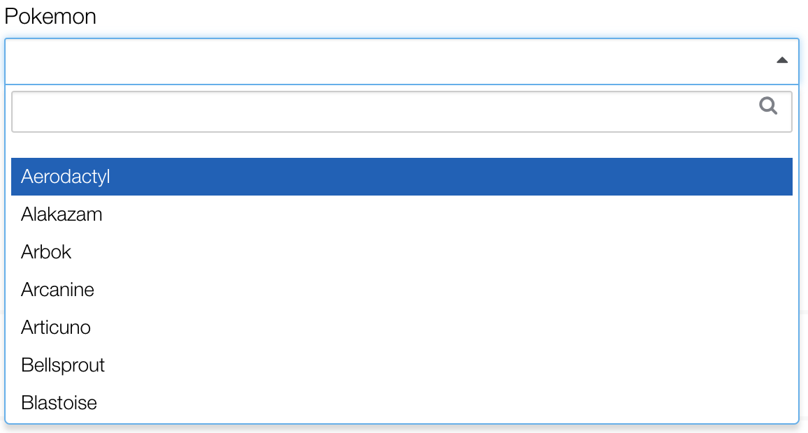

Dropdowns
av-dropdown

Wrapper around Select2 v3.5.2. Use ng-options to pass Select2 options to the avDropdown directive.
ng-options="{ allowClear: false, placeholder: 'Select your favorite number'}"Simple
Usage without ng-options.
<select id="dropdownSimple" class="form-control" av-dropdown="" ng-model="vm.selectedNumber" ng-options="{ allowClear: false, placeholder: 'Select your favorite number'}">
<option value="">Select One</option>
<option value="1">One</option>
<option value="2">Two</option>
<option value="3">Three</option>
<option value="4">Four</option>
<option value="5">Five</option>
</select>Array
vm.pokemon = ['Aerodactyl', 'Alakazam'];<select id="dropdownPoke" class="form-control" av-dropdown="" ng-model="vm.selectedPoke" ng-options="poke for poke in vm.pokemon" options="{ allowClear: false, placeholder: 'Select a Pokemon'}">
</select>Label for Value in Array
vm.states = [
{
'name': 'Alabama',
'id': 'AL'
},
{
'name': 'Alaska',
'id': 'AK'
}
];<select
id="dropdownStates1"
class="form-control"
av-dropdown
ng-model="vm.selectedState1"
ng-options="state.name for state in vm.states"
ng-change="vm.onChange(vm.selectedState1)"
options="{ allowClear: true, placeholder: 'Select State'}"
>
</select>Select as Label for Value in Array
<select
id="dropdownStates1"
class="form-control"
av-dropdown=""
ng-model="vm.selectedState1"
ng-options="state.id as state.name for state in vm.states"
ng-change="vm.onChange(vm.selectedState1)"
options="{ allowClear: true, placeholder: 'Select State'}">
</select>Label for Value in Array Track By
<select
id="dropdownStates1"
class="form-control"
av-dropdown
ng-model="vm.selectedState1"
ng-options="state.name for state in vm.states track by state.id"
ng-change="vm.onChange(vm.selectedState1)"
ptions="{ allowClear: true, placeholder: 'Select State'}">
</select>Multiple
<select
id="dropdownMultiple"
class="form-control"
multiple
av-dropdown
ng-model="vm.selectedStates"
ng-options="state.name for state in vm.states track by state.id"
ng-change="vm.onChange(vm.selectedStates)"
options="{ allowClear: true, placeholder: 'Select State'}">
</select>Query Large Data-sets
Select2 v3.5.2 requires an input field for lazy loading large data sets through queries. Do not use ng-options because Angular does not allow that attribute on <input> since v1.4. Instead, extends AvSelectResource to easily page large data-sets using Select2.
class DemoPhotosResource extends AvSelectResource {
constructor() {
super({name: 'photos'});
}
getResults(response) {
return response.photos;
}
// Optional. Mapping is only need if the item in the collection does not have
// "id" and "text" as attributes. The "text" is the visible label of the option and
// the "id" is the value.
mapResult(item) {
return {
id: item.id,
text: item.title
};
}
}// vm is the controller in $scope
vm.getOptions() {
return {
allowClear: true,
placeholder: 'Find a photo',
minimumInputLength: 3,
query: demoDropdownResource
};
}<div>
<label for="dropdownQuery">Photos</label>
<input
id="dropdownQuery"
class="form-control"
av-dropdown
ng-model="vm.selectedPhoto"
ng-change="vm.onChange(vm.selectedPhoto)"
options="vm.getOptions()">
</div>